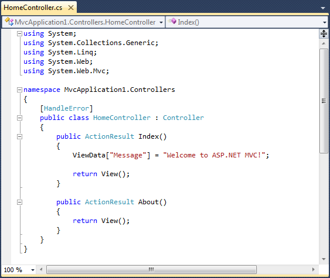
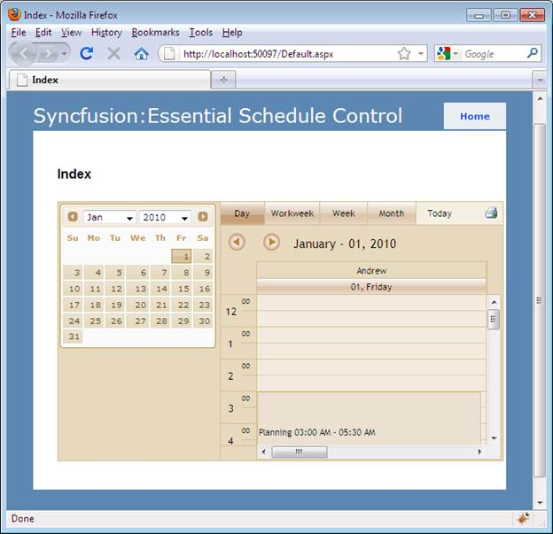

To create a schedule using ScheduleProperty Model:
20. Select the Index.aspx from View->Home folder.
21. Add the following code in the FlatSchedule.cshtml file, to create the Schedule control in View.
|
[View[cshtml]
@(Html.Syncfusion().Schedule("FlatSchedule", "ScheduleModel") .BindList(bind => { columns.IdField("Id"); columns.SubjectField("Subject"); columns.LocationField("Location"); columns.StartTimeField("StartTime"); columns.EndTimeField("EndTime"); columns.DescriptionField("Description"); columns.OwnerField("Owner"); columns.PriorityField("Priority"); columns.RecurrenceField("Recurrence"); columns.RecurrenceTypeField("RecurrenceType"); columns.RecurrenceTypeCountField("RecurrenceTypeCount"); columns.ReminderField("Reminder"); }))
|
22. Double-click the HomeController.cs from Controller/Home folder.
The HomeController.cs page is displayed on the main window.

Figure 62: HomeController.cs Page
23. Include the Syncfusion.Mvc.Shared, Syncfusion.Mvc.Schedule namespaces to HomeController by using the following code:
[Controller]
using Syncfusion.Mvc.Schedule;
using Syncfusion.Mvc.Shared;
24. Edit the Index method as given below:
|
[Controller]
/// <summary> /// It is used to bind the Schedule /// </summary> /// <returns>View page, it displays the Schedule</returns> public ActionResult FlatSchedule() { var data = new NorthwindDataClassesDataContext().AppointmentTables.Take(200); SchedulePropertiesModel model = new SchedulePropertiesModel() { DataSource=data, Skins=ScheduleSkins.Sandune }; ViewData["ScheduleModel"] = model; return View(); }
|
Code details:
b. Object created for SchedulePropertiesModel and the following Schedule properties are assigned to the model:
DataSource - Gets or sets DataSource for the Schedule control
Skins - Gets or sets Schedule Skin
c. Pass the model to View using ViewData. This will pass the Schedule properties from Controller to View.
Syntax :
ViewData["model_id"] = object_name;
d. Create a post method for Index action and bind the data source to Schedule, as shown in the code displayed below:
|
[Controller]
/// <summary> /// Post Requests are mapped to this method. This method invokes the HtmlActionResult /// from the Schedule. Required response is generated. /// </summary> /// <param name="args">Contains post action properties </param> /// <returns> /// HtmlActionResult which returns data displayed on the Schedule /// </returns> [AcceptVerbs(HttpVerbs.Post)] public ActionResult FlatSchedule(Params args) { IEnumerable data = new NorthwindDataClassesDataContext().AppointmentTables.Take(200); return data.ScheduleActions<ScheduleHtmlActionResult>(); }
|
 Note: Essential Schedule is fully Ajax enabled.
For tab navigation/date navigation/crud actions, the entire page will not be
refreshed. The Schedule contents alone will be refreshed using Ajax calls. So
the above method is necessary to achieve the Schedule actions.
Note: Essential Schedule is fully Ajax enabled.
For tab navigation/date navigation/crud actions, the entire page will not be
refreshed. The Schedule contents alone will be refreshed using Ajax calls. So
the above method is necessary to achieve the Schedule actions.
Code details:
d. Get the data source and store it in an IEnumeable collection.
e. Call the ScheduleAction helper with the Type of Model, which invokes the custom action result. This will process the data source returns and the required response while calling tab navigation/date navigation actions.
f. Run the application.

Figure 63: Schedule Control Added to the Application
A sample which demonstrates a basic Schedule control that can be downloaded from the following link:
Note: The version number for the assemblies has
been set to 9.2.0.137 in the Web.config file of the attached sample. Change the
version number to the appropriate version in the (available in root directory)
Web.config file.